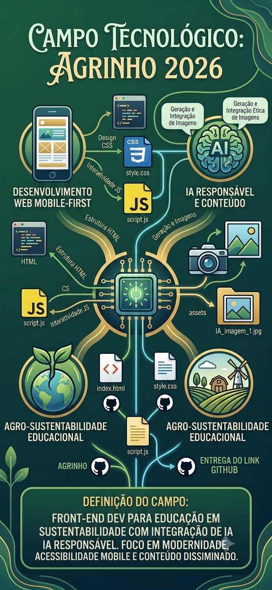
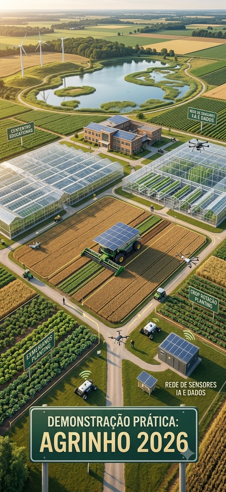

Agro forte, futuro sustentável.
O equilíbrio essencial entre a alta produtividade no campo e a preservação do meio ambiente.
O Nosso Compromisso
Mostrar que é perfeitamente possível continuar produzindo em larga escala sem destruir a natureza.
A Importância do Agro
Motor da Economia
O agronegócio impulsiona o PIB nacional, fortalecendo a economia e gerando divisas para o país.
Geração de Empregos
Responsável por criar milhões de postos de trabalho no campo, na indústria e na tecnologia.
Segurança Alimentar
Garante a comida na mesa da população com qualidade e abastecimento constante.
Impactos Ambientais a Corrigir
Combate ao Desmatamento
Foco em zerar a abertura de novas vegetações e focar totalmente na recuperação de solos degradados.
Uso Consciente da Água
Eliminação do desperdício nos métodos antigos de irrigação e proteção ativa dos rios e nascentes.
Redução de Carbono
Correção de manejos errados que liberam poluentes, adotando práticas que sequestram carbono no solo.
Tecnologias Sustentáveis
Agricultura de Precisão
Uso de mapas e GPS para aplicar insumos no local exato, evitando qualquer tipo de desperdício.
Irrigação Inteligente
Sensores que medem a umidade da terra e molham a lavoura na quantidade certa e no momento ideal.
Uso de Drones
Monitoramento aéreo para localizar pragas precocemente e aplicar defensivos biológicos direto no foco.
Energia Renovável
Instalação de painéis solares nas propriedades e produção de biogás com dejetos e restos agrícolas.
Tecnologia no Campo
Clique para girar 🔄
Sistemas modernos garantem alta produtividade reduzindo drasticamente o uso de recursos.
Sustentabilidade Aplicada
Clique para girar 🔄
Preservação ambiental aliada a técnicas modernas de conservação de recursos hídricos e solo.
Soluções de Equilíbrio
Sistema ILPF
A Integração Lavoura-Pecuária-Floresta combina árvores, gado e plantação no mesmo espaço, otimizando a terra e oferecendo conforto aos animais.
Plantio Direto
O cultivo é realizado sobre a palhada da colheita anterior, protegendo a terra do sol e da chuva e mantendo a umidade no solo.